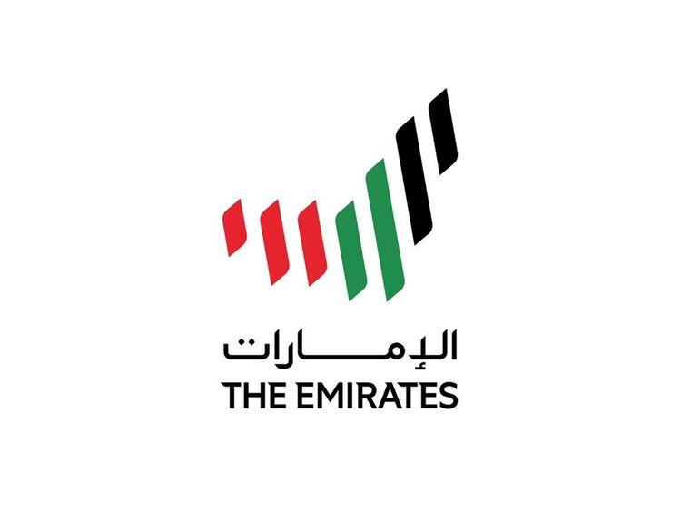

Klik hier De maatschappij werd in mei 1985 opgericht door de regering van de Verenigde Arabische Emiraten. ... Op 25 oktober 1985 werden de eerste vluchten naar India en Pakistan uitgevoerd. Tussen 1987 en 1990 kwamen ook Azië en Europa op de routekaart. Emirates werd op 1 april 1998 aandeelhouder van SriLankan Airlines. Vivamus Begin jaren negentig behoorde Emirates tot de snelst groeiende luchtvaartmaatschappijen ter wereld; de inkomsten stegen elk jaar met ongeveer $ 100 miljoen, tot bijna $ 500 miljoen in het jaar 1993. De luchtvaartmaatschappij vervoerde in hetzelfde jaar 1,6 miljoen passagiers en 68.000 ton vracht.
Emirates Boeing 777-300ER op weg naar Madrid, Spanje. Emirates is 's werelds grootste exploitant van de Boeing 777 en de enige luchtvaartmaatschappij die elke versie van het vliegtuig heeft uitgevoerd.
Met het uitbreken van de Golfoorlog namen de zaken voor Emirates toe omdat de oorlog andere luchtvaartmaatschappijen uit het gebied hield; het was de enige luchtvaartmaatschappij die de laatste tien dagen van de oorlog bleef vliegen. Na de conflicten vlogen in totaal 92 luchtvaartmaatschappijen naar internationale markten en had Emirates te maken met hevige concurrentie op de thuisbasis. Het vervoerde halverwege de jaren negentig ongeveer drie miljoen passagiers per jaar naar Dubai International Airport. Emirates bleef eind jaren negentig uitbreiden. De groeiende vrachtbusiness was goed voor 16 procent van de totale inkomsten van de luchtvaartmaatschappij.
Emirates begon met het aanbieden van rond-de-werelddiensten vanaf de herfst van 1993, nadat een partnerschap was aangegaan met US Airways. Het had eerder samenwerkingsovereenkomsten met Cyprus Airways.
In 1995 breidde de luchtvaartmaatschappij de vloot uit tot zes Airbus A300's en acht Airbus A310's en bouwde het netwerk uit tot 37 bestemmingen in 30 landen. In 1996 ontving de luchtvaartmaatschappij haar eerste Boeing 777-200-vliegtuig en kort daarna volgden zes Boeing 777-200ER's. De komst van de 777's stelde Emirates in staat om zijn Singapore-dienst verder naar Melbourne voort te zetten, beginnend in 1996 (de vlucht werkte kort als een Dubai-Jakarta-Melbourne-dienst voordat deze werd afgebroken vanwege onrendement; Emirates zou pas in 2006 weer non-stop naar Jakarta gaan vliegen). zou een zeer winstgevende route voor Emirates worden en er zouden nieuwe bestemmingen in Australië worden toegevoegd. In 1998 werd Emirates Sky Cargo gelanceerd. Hoewel de Emiraten altijd al een vrachtdienst hadden verricht met gebruikmaking van capaciteit in hun passagiersvliegtuigen, werd deze nu uitgebreid met een vliegtuig-, bemanning-, onderhouds- en verzekeringslease met Atlas Air, aanvankelijk voor één Boeing 747-200-vrachtschip.
In mei 1998 betaalde Emirates de regering van Sri Lanka 70 miljoen dollar voor een belang van 43,6% in SriLankan Airlines (toen bekend als Air Lanka). Als onderdeel van de deal ontving Emirates een contract van tien jaar om SriLankaans te beheren. In januari 2008 kondigde Emirates aan dat het het beheerscontract met ingang van april 2008 zou beëindigen. Emirates heeft vervolgens zijn belang in de luchtvaartmaatschappij verkocht aan de regering van Sri Lanka, in een deal van naar schatting $ 150 miljoen die in 2010 werd afgerond, waarmee een einde kwam aan alle banden die de twee luchtvaartmaatschappijen met elkaar hadden . Op 9 november 2013 onthulde de luchtvaartmaatschappij Emirates haar eerste lichte sportvliegtuig aan de wereld.
In april 2000 kondigde Emirates een order aan voor de Airbus A3XX (later Airbus A380 genoemd), het grootste widebody-vliegtuig ooit gebouwd. De deal bestond uit vijf A380-800-passagiersvliegtuigen en twee vrachtschipversies. De deal werd bevestigd op 4 november 2001, toen Emirates bestellingen aankondigde voor 15 extra A380-800's. Twee jaar later werd een extra bestelling geplaatst voor 21 A380-800's. In april 2006 verving Emirates zijn order voor de twee vrachtschipvarianten door een order voor twee A380-800's. In 2007 bestelde Emirates 15 A380-800's, waarmee het totaal op 58 komt. Volgens Emirates zou het vliegtuig de luchtvaartmaatschappij in staat stellen om optimaal gebruik te maken van de schaarse start- en landingsslots op drukke luchthavens zoals London Heathrow Airport. In 2005 werd de eerste A380-800 in volledige Emirates-kleurstelling getoond op de Dubai Airshow.